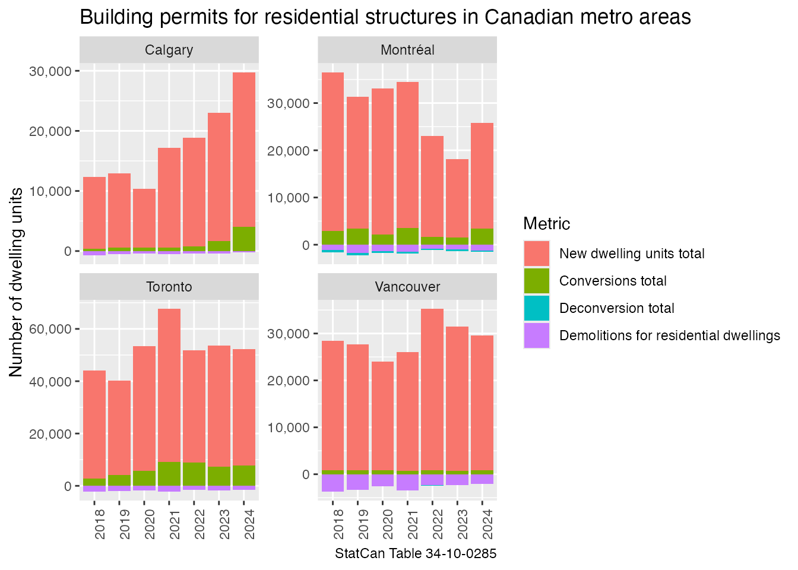

vignettes/partial_table_data_download.Rmd
partial_table_data_download.RmdSometimes one is only interested in a relatively small subset of a large table, and instead of having to download the entire table, or just a handful of vectors, one might want to access a substantial number of coordinates without having to download the entire table. The package facilitates this by
We demonstrate this process by taking the large Table 34-10-0285 on building permits.
library(cansim)
library(dplyr)
#>
#> Attaching package: 'dplyr'
#> The following objects are masked from 'package:stats':
#>
#> filter, lag
#> The following objects are masked from 'package:base':
#>
#> intersect, setdiff, setequal, union
library(ggplot2)
bp_template <- get_cansim_table_template("34-10-0285")
head(bp_template)
#> # A tibble: 6 × 7
#> cansimTableNumber COORDINATE Geography `Type of building` `Type of work`
#> <chr> <chr> <chr> <chr> <chr>
#> 1 34-10-0285 1.1.1.1.1 Canada Total residential and n… Types of work…
#> 2 34-10-0285 1.1.1.1.2 Canada Total residential and n… Types of work…
#> 3 34-10-0285 1.1.1.1.3 Canada Total residential and n… Types of work…
#> 4 34-10-0285 1.1.1.1.4 Canada Total residential and n… Types of work…
#> 5 34-10-0285 1.1.1.2.1 Canada Total residential and n… Types of work…
#> 6 34-10-0285 1.1.1.2.2 Canada Total residential and n… Types of work…
#> # ℹ 2 more variables: Variables <chr>, `Seasonal adjustment, value type` <chr>The template gives information on the possible combinations of data (although some combinations might not be available in the table and have no data). We can use this to pinpoint data series we are interested in. For the purpose of this example we want to look at the number of housing units created and lost in the four largest metro areas in Canada.
bp_template_filtered <- bp_template %>%
filter(Geography %in% c("Toronto, Ontario", "Montréal, Quebec", "Vancouver, British Columbia", "Calgary, Alberta"),
`Type of building` %in% c("Total residential","Total demolitions"),
`Type of work` %in% c("Demolitions for residential dwellings","Deconversion total","Conversions total","New dwelling units total"),
Variables %in% c("Number of dwelling-units created", "Number of dwelling-units lost", "Number of dwelling-units demolished"),
`Seasonal adjustment, value type` == "Unadjusted, current"
)
bp_template_filtered
#> # A tibble: 96 × 7
#> cansimTableNumber COORDINATE Geography `Type of building` `Type of work`
#> <chr> <chr> <chr> <chr> <chr>
#> 1 34-10-0285 24.4.3.2.1 Montréal, Qu… Total residential New dwelling …
#> 2 34-10-0285 24.4.3.3.1 Montréal, Qu… Total residential New dwelling …
#> 3 34-10-0285 24.4.3.4.1 Montréal, Qu… Total residential New dwelling …
#> 4 34-10-0285 24.4.16.2.1 Montréal, Qu… Total residential Conversions t…
#> 5 34-10-0285 24.4.16.3.1 Montréal, Qu… Total residential Conversions t…
#> 6 34-10-0285 24.4.16.4.1 Montréal, Qu… Total residential Conversions t…
#> 7 34-10-0285 24.4.20.2.1 Montréal, Qu… Total residential Deconversion …
#> 8 34-10-0285 24.4.20.3.1 Montréal, Qu… Total residential Deconversion …
#> 9 34-10-0285 24.4.20.4.1 Montréal, Qu… Total residential Deconversion …
#> 10 34-10-0285 24.4.24.2.1 Montréal, Qu… Total residential Demolitions f…
#> # ℹ 86 more rows
#> # ℹ 2 more variables: Variables <chr>, `Seasonal adjustment, value type` <chr>To getting data for just this subset of the table we feed that into
the get_cansim_data_for_table_coord_periods function.
bp_data <- get_cansim_data_for_table_coord_periods(bp_template_filtered)
#> Accessing CANSIM NDM vectors from Statistics Canada
#> Failed to load for 80 coordinates
#> 24.27.16.2.1.0.0.0.0.0
#> 24.27.16.3.1.0.0.0.0.0
#> 24.27.16.4.1.0.0.0.0.0
#> 24.27.20.2.1.0.0.0.0.0
#> 24.27.20.3.1.0.0.0.0.0
#> 24.27.20.4.1.0.0.0.0.0
#> 24.27.24.2.1.0.0.0.0.0
#> 24.27.24.3.1.0.0.0.0.0
#> 24.27.3.2.1.0.0.0.0.0
#> 24.27.3.3.1.0.0.0.0.0
#> 24.27.3.4.1.0.0.0.0.0
#> 24.4.16.3.1.0.0.0.0.0
#> 24.4.16.4.1.0.0.0.0.0
#> 24.4.20.2.1.0.0.0.0.0
#> 24.4.20.4.1.0.0.0.0.0
#> 24.4.24.2.1.0.0.0.0.0
#> 24.4.24.3.1.0.0.0.0.0
#> 24.4.24.4.1.0.0.0.0.0
#> 24.4.3.3.1.0.0.0.0.0
#> 24.4.3.4.1.0.0.0.0.0
#> 45.27.16.2.1.0.0.0.0.0
#> 45.27.16.3.1.0.0.0.0.0
#> 45.27.16.4.1.0.0.0.0.0
#> 45.27.20.2.1.0.0.0.0.0
#> 45.27.20.3.1.0.0.0.0.0
#> 45.27.20.4.1.0.0.0.0.0
#> 45.27.24.2.1.0.0.0.0.0
#> 45.27.24.3.1.0.0.0.0.0
#> 45.27.3.2.1.0.0.0.0.0
#> 45.27.3.3.1.0.0.0.0.0
#> 45.27.3.4.1.0.0.0.0.0
#> 45.4.16.3.1.0.0.0.0.0
#> 45.4.16.4.1.0.0.0.0.0
#> 45.4.20.2.1.0.0.0.0.0
#> 45.4.20.4.1.0.0.0.0.0
#> 45.4.24.2.1.0.0.0.0.0
#> 45.4.24.3.1.0.0.0.0.0
#> 45.4.24.4.1.0.0.0.0.0
#> 45.4.3.3.1.0.0.0.0.0
#> 45.4.3.4.1.0.0.0.0.0
#> 53.27.16.2.1.0.0.0.0.0
#> 53.27.16.3.1.0.0.0.0.0
#> 53.27.16.4.1.0.0.0.0.0
#> 53.27.20.2.1.0.0.0.0.0
#> 53.27.20.3.1.0.0.0.0.0
#> 53.27.20.4.1.0.0.0.0.0
#> 53.27.24.2.1.0.0.0.0.0
#> 53.27.24.3.1.0.0.0.0.0
#> 53.27.3.2.1.0.0.0.0.0
#> 53.27.3.3.1.0.0.0.0.0
#> 53.27.3.4.1.0.0.0.0.0
#> 53.4.16.3.1.0.0.0.0.0
#> 53.4.16.4.1.0.0.0.0.0
#> 53.4.20.2.1.0.0.0.0.0
#> 53.4.20.4.1.0.0.0.0.0
#> 53.4.24.2.1.0.0.0.0.0
#> 53.4.24.3.1.0.0.0.0.0
#> 53.4.24.4.1.0.0.0.0.0
#> 53.4.3.3.1.0.0.0.0.0
#> 53.4.3.4.1.0.0.0.0.0
#> 59.27.16.2.1.0.0.0.0.0
#> 59.27.16.3.1.0.0.0.0.0
#> 59.27.16.4.1.0.0.0.0.0
#> 59.27.20.2.1.0.0.0.0.0
#> 59.27.20.3.1.0.0.0.0.0
#> 59.27.20.4.1.0.0.0.0.0
#> 59.27.24.2.1.0.0.0.0.0
#> 59.27.24.3.1.0.0.0.0.0
#> 59.27.3.2.1.0.0.0.0.0
#> 59.27.3.3.1.0.0.0.0.0
#> 59.27.3.4.1.0.0.0.0.0
#> 59.4.16.3.1.0.0.0.0.0
#> 59.4.16.4.1.0.0.0.0.0
#> 59.4.20.2.1.0.0.0.0.0
#> 59.4.20.4.1.0.0.0.0.0
#> 59.4.24.2.1.0.0.0.0.0
#> 59.4.24.3.1.0.0.0.0.0
#> 59.4.24.4.1.0.0.0.0.0
#> 59.4.3.3.1.0.0.0.0.0
#> 59.4.3.4.1.0.0.0.0.0
bp_data
#> # A tibble: 1,568 × 17
#> REF_DATE Date GEO `Type of building` `Type of work` Variables
#> <chr> <date> <fct> <fct> <fct> <fct>
#> 1 2017-01-01 2017-01-01 Montréal, … Total demolitions Demolitions f… Number o…
#> 2 2017-02-01 2017-02-01 Montréal, … Total demolitions Demolitions f… Number o…
#> 3 2017-03-01 2017-03-01 Montréal, … Total demolitions Demolitions f… Number o…
#> 4 2017-04-01 2017-04-01 Montréal, … Total demolitions Demolitions f… Number o…
#> 5 2017-05-01 2017-05-01 Montréal, … Total demolitions Demolitions f… Number o…
#> 6 2017-06-01 2017-06-01 Montréal, … Total demolitions Demolitions f… Number o…
#> 7 2017-07-01 2017-07-01 Montréal, … Total demolitions Demolitions f… Number o…
#> 8 2017-08-01 2017-08-01 Montréal, … Total demolitions Demolitions f… Number o…
#> 9 2017-09-01 2017-09-01 Montréal, … Total demolitions Demolitions f… Number o…
#> 10 2017-10-01 2017-10-01 Montréal, … Total demolitions Demolitions f… Number o…
#> # ℹ 1,558 more rows
#> # ℹ 11 more variables: `Seasonal adjustment, value type` <fct>, VALUE <dbl>,
#> # val_norm <dbl>, SCALAR_ID <int>, VECTOR <chr>, cansimTableNumber <chr>,
#> # COORDINATE <chr>, SYMBOL <int>, releaseTime <chr>, frequencyCode <int>,
#> # DECIMALS <int>We then aggregate it to annual data and plot it by year and area, separating out dwellings newly created, created through conversion, those lost to deconversions and those demolished.
bp_data |>
mutate(Value=case_when(
Variables %in% c("Number of dwelling-units demolished","Number of dwelling-units lost") ~ - val_norm,
TRUE ~ val_norm
)) |>
mutate(Name=gsub(", .+","",GEO),
Year=strftime(Date,"%Y")) |>
summarize(Value=sum(Value),n=n(),.by=c(Name,Year,`Type of work`)) |>
filter(n==12,!is.na(Value)) |> # only show years with complete 12 months of data
ggplot(aes(x=Year,y=Value,fill=`Type of work`)) +
geom_bar(stat="identity") +
facet_wrap(~Name,scales="free_y") +
scale_y_continuous(labels=scales::comma) +
theme(axis.text.x = element_text(angle=90, hjust=1)) +
labs(title="Building permits for residential structures in Canadian metro areas",
y="Number of dwelling units",
x=NULL,
fill="Metric",
caption="StatCan Table 34-10-0285") 